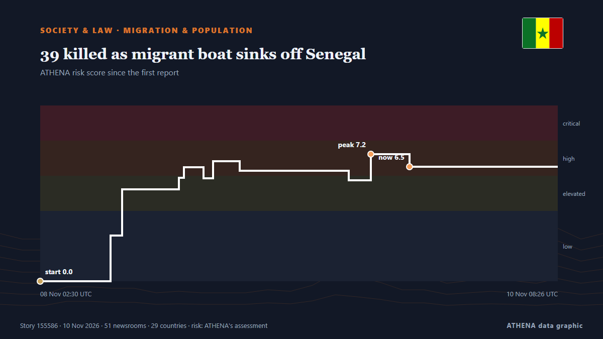

39 killed as migrant boat sinks off Senegal

Greek coast guards rescued 28 migrants and found the body of a man on a boat in distress near Crete. de Arab News
Relayé de façon indépendante par 51 médias dans 29 pays depuis le 8 nov. ; premier à l'annoncer : Xinhua (English) — page reader ; la couverture faiblit. ATHENA juge le risque élevé (6.2/10), surtout en raison de la gravité des dommages décrits et de sa portée géographique et sectorielle. La confiance est de 91 % (élevée) : 51 médias indépendants le confirment, avec une fiabilité moyenne des sources de 76 %. Médias par pays : Chine (4), Arabie saoudite (4), Pakistan (3). Couverture : du 8 nov. au 9 nov., 31 heures.
Pourquoi c'est important: Cette page suit les migrations en Méditerranée — la mer Égée et les îles grecques, la route centrale vers l'Italie et Malte, la Libye et la Tunisie — ainsi que les politiques d'asile et de frontières de l'UE, telles que la presse mondiale les rapporte.
Ce qui a changé : 47 nouveaux articles de 39 rédactions dans les 24 heures jusqu'au 10 nov..
Premier titre : Around 20 bodies recovered from coast after boat ran aground in Senegal
Les titres sont affichés en anglais, tels que publiés.
Comment lire cette page
- Ce que vous lisez
- 51 médias dans 29 pays ont rapporté cet événement. Les reportages ci-dessous sont classés selon leur ordre de parution ; chaque titre ouvre l'article original. ATHENA n'écrit aucun reportage.
- Notre lecture
- Pour mémoire — Les reportages décrivent une affaire terminée, intérieure, commerciale ou personnelle. Nous la consignons pour que vous voyiez qui l'a rapportée et quand. Nous ne suivons pas ici de risque de conflit plus large.
- Quelle base de preuves
- Solide De nombreux médias indépendants, dans de nombreux pays, décrivent le même événement.
Après retrait des doublons, des éléments hors sujet et périmés, 22 des 40 reportages listés sont retenus ; 90 % des titres correspondent à l'événement.
- Ce que cela ne veut pas dire
- ATHENA mesure la façon dont un événement est rapporté, pas sa véracité. Ce n'est ni une prévision, ni un jugement sur qui a raison, ni un conseil.
- Ce qui la changerait
- Des reportages d'autres médias indépendants montrant une évolution différente, ou une confirmation ou un démenti ferme d'une source officielle.
Lecture R2 · actualisée à chaque mise à jour de cette page. ATHENA n'a pas encore publié de bilan de ces lectures ; il sera lié ici le moment venu.
En un coup d'œil
Sélectionné, noté et rédigé par la méthodologie publiée d'ATHENA. Aucun rédacteur n'intervient sur un événement en particulier. Comment il est produit ›
| 08 Nov 02:24 UTC | 1 |
|---|---|
| 08 Nov 04:24 UTC | 0 |
| 08 Nov 06:24 UTC | 0 |
| 08 Nov 08:24 UTC | 5 |
| 08 Nov 10:24 UTC | 5 |
| 08 Nov 12:24 UTC | 4 |
| 08 Nov 14:24 UTC | 4 |
| 08 Nov 16:24 UTC | 1 |
| 08 Nov 18:24 UTC | 2 |
| 08 Nov 20:24 UTC | 1 |
| 08 Nov 22:24 UTC | 1 |
| 09 Nov 00:24 UTC | 1 |
| 09 Nov 02:24 UTC | 3 |
| 09 Nov 04:24 UTC | 2 |
| 09 Nov 06:24 UTC | 6 |
| 09 Nov 08:24 UTC | 14 |
| 09 Nov 10:24 UTC | 11 |
| 09 Nov 12:24 UTC | 8 |
| 09 Nov 14:24 UTC | 3 |
| 09 Nov 16:24 UTC | 3 |
| 09 Nov 18:24 UTC | 0 |
| 09 Nov 20:24 UTC | 1 |
| 09 Nov 22:24 UTC | 2 |
| 10 Nov 00:24 UTC | 1 |
| 10 Nov 02:24 UTC | 0 |
| 10 Nov 04:24 UTC | 2 |
| 10 Nov 06:24 UTC | 0 |
| 10 Nov 08:24 UTC | 2 |
| 08 Nov 02:30 UTC | 0.0 |
|---|---|
| 08 Nov 09:49 UTC | 2.6 |
| 08 Nov 11:01 UTC | 5.2 |
| 08 Nov 16:56 UTC | 5.9 |
| 08 Nov 17:30 UTC | 6.5 |
| 08 Nov 19:31 UTC | 5.8 |
| 08 Nov 20:30 UTC | 6.8 |
| 08 Nov 23:17 UTC | 6.3 |
| 09 Nov 10:40 UTC | 5.7 |
| 09 Nov 12:58 UTC | 7.2 |
| 09 Nov 17:00 UTC | 6.5 |
| 10 Nov 08:41 UTC | 6.2 |
Pourquoi ces chiffres
Importance
Risque
Confiance
La couverture : qui l'a annoncé, et quand
titre tel que publié · ouvre l'original- Xinhua (English) — page reader · ChineAround 20 bodies recovered from coast after boat ran aground in Senegal
- Arab News · Arabie saouditeGreek rescuers find body on migrant boat in distress
- Xinhua (English) — page reader · ChineFlash: 21 killed after migrant boat sank off NW Senegal -- media
- New Straits Times · MalaisieMigrant boat sinks off Senegal, 21 killed
- Euronews English · FranceAt least 21 dead after migrant boat capsizes off Senegal, authorities say
- Express Tribune · PakistanAt least 21 dead after migrant boat sinks off Senegal coast, government says
- Xinhua (English) — page reader · Chine21 dead, 1 rescued after migrant boat sinks off NW Senegal
- Channels TV · Nigeria21 Killed As Migrant Boat Sinks Off Senegal, Says Authorities
- Punch · Nigeria21 killed as migrant boat sinks off Senegal
- The Straits Times · SingapourAt least 21 dead after migrant boat sinks off Senegal coast, government says
- The Rio Times · BrésilSenegal Migrant Boat Wreck Leaves 21 Dead
- Times of India · IndeAt least 21 dead after migrant boat sinks off Senegal's northwestern coast
- Deccan Herald · IndeAt least 21 dead after migrant boat sinks off Senegal coast
- DW English · AllemagneMany killed after migrant boat sinks off Senegal
- The Daily Star — page reader · Bangladesh21 dead after migrant boat sinks off Senegal coast
- Xinhua (English) — page reader · Chine1 Dead, 28 rescued in migrant boat incident off Crete, Greece
- The Island · Sri LankaAt least 21 dead as small boat sinks off Senegal
- TRT World · TurquieDeath toll from migrant boat sinking off Senegal rises to 34
- ABC News (International) · États-UnisAt least 21 dead after boat carrying migrants sinks off Senegal coast, interior ministry says
- The Daily Star — page reader · BangladeshMIGRANT CRISIS / 21 killed as boat sinks off Senegal
- Arab News · Arabie saouditeMigrant boat sinks off Senegal, 34 killed: authorities
- Le Monde (English) · FranceMigrant boat sinks off Senegal, leaving at least 35 dead
- Business Recorder · PakistanMigrant boat sinks off Senegal; 21 killed
- Gulf News · Émirats arabes unisAt least 35 killed in migrant boat sinking off Senegal
- TRT World · TurquieMigrant boat tragedy claims at least 35 lives off Senegal's coast
- Ada Derana · Sri LankaAt least 34 dead as small boat sinks off Senegal
- The Daily Star — page reader · BangladeshAt least 35 killed in migrant boat sinking off Senegal
- To Vima (English) · Grèce12 Dead, 105 Rescued in Three Migrant Shipwrecks off Crete
- ProtoThema English ·Tragedy off Crete: 12 migrants found dead in boat, 105 rescued in three overnight operations
- Greek City Times · Grèce12 Dead as 105 Migrants Rescued in Operations South of Crete
- Arab News · Arabie saouditeGreece recovers 12 dead migrants from boat off of Crete, coast guard says
- The Straits Times · SingapourFourteen migrants die in attempt to reach Crete, Greek coastguard says
- Business Recorder · PakistanGreece recovers 12 dead migrants from boat off of Crete, coast guard says
- Asharq Al-Awsat (English) · Arabie saouditeEight Dead in Migrant Boat Sinking off Greece
- BBC News · Royaume-UniAt least 39 die after Europe-bound migrant boat sinks off Senegal
- Arab Times · KoweïtGreek authorities find 12 bodies in a boat carrying migrants south of Crete; 18 rescued
- The Independent · Royaume-Uni13 people found dead on boat carrying migrants near Greek island of Crete
- TRT World · Turquie12 migrants dead, more than 100 rescued off Greek island of Crete
- Channels TV · Nigeria20 Migrants Die Trying To Reach Greece’s Crete
- ABC News (International) · États-UnisDeath toll from migrant boat found with bodies on board south of Greece rises to 14